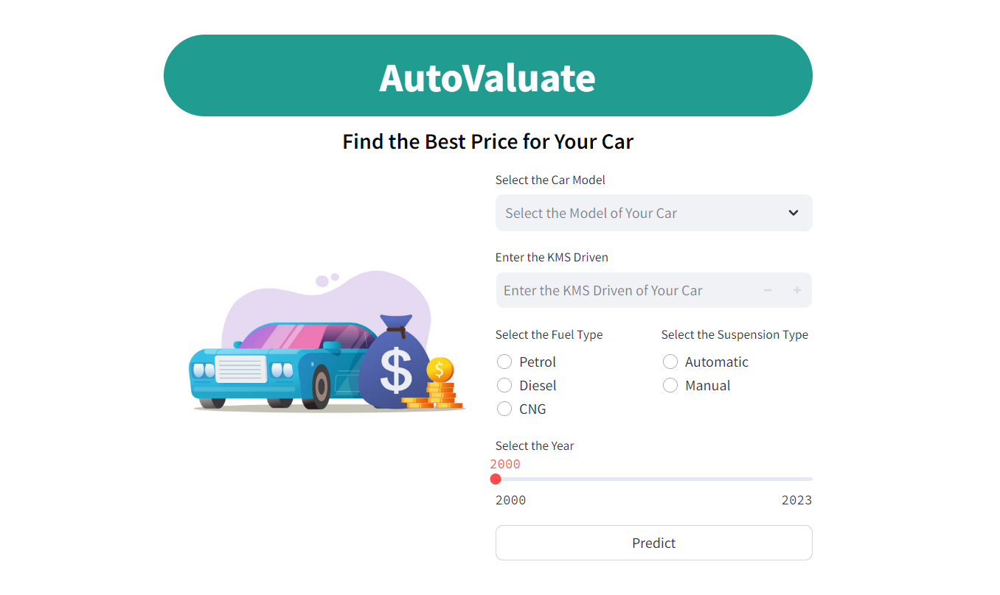
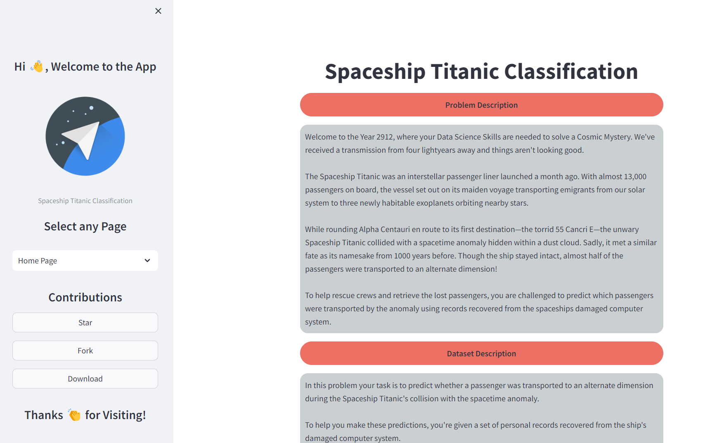

About

Hi 👋, I'm Mrityunjay Pathak
I am a Data Scientist with a knack for uncovering patterns and trends that drive smarter decisions.
I am a Data Scientist with a knack for uncovering patterns and trends that drive smarter decisions.
Skills
 Python
Python NumPy
NumPy Pandas
Pandas Matplotlib
Matplotlib Seaborn
Seaborn Plotly
Plotly Sklearn
Sklearn MySQL
MySQL Git
Git Streamlit
Streamlit HTML
HTML CSS
CSSProjects
CAR PRICE PREDICTION
Hello Everyone,
Here is my regression project based on predicting the price of used cars using Linear Regression.
Dataset
I used Honda Used Car Selling Dataset which is one of my own dataset uploaded on Kaggle.
Link to the Dataset : Car Price Dataset
Problem Statement
• To develop a Machine Learning Model that can accurately predict the prices of used cars based on various features and attributes.
• The predicted prices will assist both buyers and sellers in making informed decisions, ensuring fair transactions in the used car market.
Link to the Notebook : Car Price Prediction
Streamlit Web App
• For my project, I have created a Streamlit Web App for predicting the prices of cars in more interactive and user friendly way.
• This web app allows you to predict the prices of the cars by just selecting some of its features and fill in some details.
• These all are the features you need to select or enter before pressing the predict button :
➩ Year : Select the manufacturing year of the car.
➩ kms Driven : Enter the total distance covered by the car.
➩ Fuel Type : Choose the fuel type of the car.
➩ Suspension : Pick the type of suspension.
➩ Car Model : Select your car model from the available options.
• After selecting all these features, Just hit the 'Predict' Button.
• This web app also has multiple constraints in the input fields.
• I have named it AutoValuate.

SPACESHIP TITANIC CLASSIFICATION
Hello Everyone,
Here is my classification project based on predicting whether a passenger is transported to an alternate dimension or not.
Dataset
I used Spaceship Titanic Dataset which is uploaded by Kaggle on their website in competition menu.
Link to the Dataset : Spaceship Titanic Dataset
Problem Statement
• To predict whether a passenger was transported to an alternate dimension during the spaceship collision with the spacetime anomaly.
• To make these predictions, we have a set of personal records recovered from the ship's damaged computer system.
Link to the Notebook : Spaceship Titanic Classification
Streamlit Web App
• For my project, I have created a streamlit web app for finding out if a passenger was transported to an alternate dimensionin or not.
• This web app is multi-pages, means you can navigate to different pages through dropdown menu in the sidebar :
➩ First Page is home page, which contains the problem statement and information about the dataset.
➩ Second Page is web application page, which contains the web application itself used to classify passengers.
• It also contains a contribution section in the sidebar, which lets you contribute to the project by Giving Stars, Forking the Repository and Download ZIP file of the entire Project.

NETFLIX DATA ANALYSIS
Netflix has become a major player in the entertainment industry offering a diverse array of TV Shows and Movies to its global audience.
This dataset provides a snapshot of Netflix's content library including various attributes such as titles, genres, release years, ratings and durations.
Dataset
The dataset used for this analysis is sourced from Kaggle and includes information on Netflix TV Shows and Movies.
Link to the Dataset : Netflix TV Shows and Movies
Problem Statement
• To gain insights into the content available on Netflix, understanding the patterns and trends to uncover valuable insights into how the platform curates and evolves its offerings.
• This Exploratory Data Analysis (EDA) aims to address the following key questions :
➩ Content Distribution : What are the distribution patterns of TV Shows and Movies across different genres and countries? How does the content vary in terms of release year and rating?
➩ Trend Analysis : Are there observable trends in the release of TV Shows and Movies over time? How has the number of new additions to Netflix's library evolved?
➩ Genre Popularity : What are the most and least popular genres in Netflix’s library? How does genre popularity differ by region or over time?
➩ Content Characteristics : What are the typical characteristics (e.g., duration, rating) of TV Shows vs Movies? How do these characteristics vary by genre or release year?
➩ Regional Diversity : How diverse is Netflix’s content offering in terms of geographic origin? Are there particular regions that contribute more significantly to Netflix’s library?
• This analysis will provide a deeper understanding of Netflix content library, revealing trends and patterns that can address future content strategy and development.
Link to the Notebook : Netflix Data Analysis

SUPERMARKET SALES ANALYSIS
Grocery Stores are a vital part of everyday life, providing us with the food and essentials as we need. Many people utilizes grocery delivery applications to order their products making it easy to shop from home.
Each transaction made through these applications is recorded in detail creating a valuable dataset. This project looks at data from these transactions to understand how well these stores are performing.
Dataset
The dataset is sourced from Kaggle which simulates grocery sales activities within Tamil Nadu state of India.
The dataset includes various columns that provide detailed information about each transaction at the Supermarket.
Link to the Dataset : Supermarket Sales Dataset
Problem Statement
• To gain insights into Supermarket Sales Performance understanding the patterns and trends in customer behavior, product categories and regional sales.
• This Exploratory Data Analysis (EDA) aims to address the following key questions :
➩ Customer Behavior Analysis : What are the purchasing patterns of customers based on different categories and sub-categories? How does customer spending vary across cities and states?
➩ Sales Trends : Are there observable trends in sales over time? How do sales figures fluctuate across different months or seasons?
➩ Discount Impact : What is the relationship between discounts and sales? How do discounts influence the profit margins across different categories and regions?
➩ Profit Analysis : What are the profit margins associated with various product categories and sub-categories? How do these margins vary by city and state?
➩ Regional Performance : How do sales and profit performance differ across different regions and states? Are there specific regions that contribute more significantly to overall sales and profits?
➩ Category Insights : What are the most and least popular product categories and sub-categories? How does the popularity of these categories vary by location and over time?
• This analysis will provide a deeper understanding of supermarket sales dynamics revealing trends and patterns that can inform inventory management, promotional strategies and regional marketing efforts.
Link to the Notebook : Supermarket Sales Analysis

Certificates


LinkedIn Featured
Blogs

Simple Linear Regression

Multiple Linear Regression